Part 1
AAOP 50周年記念学術大会の参加報告
前半は、米国フロリダ州 Orlando の Disney's Grand Floridian Resort and Spa で開催された AAOP Annual Clinical and Scientific Meeting 2026 の報告です。AAOP公式ページでも、2026年4月30日から5月3日までの第50回 Clinical and Scientific Meeting とされ、教育、革新、交流を掲げた節目の大会であったことが確認できます。

大会の意味

AAOPは、口腔顔面痛を「歯科の局所痛」だけで閉じず、頭痛、睡眠、神経障害性疼痛、顎関節症、心理社会的背景、薬物療法、行動療法、リハビリテーションまで含めて扱う学会です。50周年大会で示された主題は、専門分野が成熟し、同時に従来の単純な局所病変モデルから離れつつあることを象徴しています。
公式プログラムの学習目標には、口腔顔面痛専門領域の歴史と未来、神経画像、睡眠と慢性痛、エビデンスに基づくセルフマネジメント、CGRP、ボツリヌス毒素、低用量ナルトレキソン、線維筋痛症、AI、遠隔診療、栄養、口腔姿勢、再生注射療法などが含まれています。これは、臨床で痛みを診るときに「関節」「筋」「神経」「脳」「行動」「生活」を同じ画面上で考える必要がある、というメッセージです。
動画内の現地写真は、学会が単に講演を聞く場ではなく、診療者どうしが症例、手技、教育、研究、患者支援を持ち寄る場であることを伝えています。発表会場、ポスター、ハンズオン、研究者との記念写真が連続して示され、専門領域の国際的ネットワークが見える構成です。
時系列で読む
BoNT-Aをどう読むか

動画内で扱われた BoNT-A は、単なる筋弛緩薬としてではなく、痛みの神経生物学に働きかける薬剤として紹介されています。咀嚼筋痛では「筋収縮を抑える」説明が先行しがちですが、近年の議論では、末梢神経終末からの神経ペプチド放出、神経原性炎症、TRPV1やP2X3関連シグナル、グルタミン酸作動性伝達、中枢性感作への波及が問題になります。
2023年の systematic review は、口腔顔面の神経障害性疼痛に関するランダム化比較試験を絞って評価したものです。対象の中心は古典的三叉神経痛と帯状疱疹後神経痛で、レビューでは BoNT-A 群が placebo より痛みの軽減に有利である可能性が示されています。ただし、投与単位、注射部位、注射回数、フォローアップ期間、患者の表現型が研究ごとに異なり、臨床でそのまま標準プロトコルとして使える段階ではありません。
ここで重要なのは、BoNT-A を「効くか効かないか」で二分しないことです。神経障害性疼痛、筋・筋膜性疼痛、顎関節由来疼痛、頭痛様疼痛、痛覚変調性疼痛は同じ患者に重なります。BoNT-A が効く患者は、どの痛みメカニズムが主で、どの部位への介入が神経系全体の過敏性を下げるのか、という問いとして扱う必要があります。
期待できる点
- 従来薬で十分な効果が得られない神経障害性疼痛に、局所から作用する補助療法として検討できる。
- 三叉神経痛、帯状疱疹後神経痛、片頭痛・頭痛関連領域では既存研究が比較的多い。
- 単回または少ない回数の介入で、服薬負担を減らせる可能性がある。
- 末梢入力を下げることで、中枢性感作や痛みの警報系にも間接的な影響を与える仮説がある。
慎重に見る点
- 慢性口腔顔面痛全体を BoNT-A で説明することはできない。
- 投与量、注射部位、注射深度、希釈、間隔の標準化が不十分な領域がある。
- 咀嚼筋への反復投与では筋力低下、咀嚼機能、骨・筋量への影響も考える必要がある。
- 痛覚変調性疼痛や COPCs が主病態の患者では、局所注射だけでは不十分になりやすい。
臨床への示唆

AAOP大会報告の価値は、海外学会の雰囲気を知ることだけではありません。むしろ重要なのは、現代の口腔顔面痛診療が「歯」「咬合」「顎関節」「筋」だけの閉じた体系ではなく、慢性痛医学の中に置かれているという点です。診断では局所疾患を丁寧に除外しつつ、患者の全身痛、睡眠、疲労、気分、外傷体験、服薬、生活機能を同時に見ます。
そのため、歯科臨床で AAOP的な視点を取り入れるなら、まず痛みの分類を明確にします。急性の歯髄炎や根尖性歯周炎のような侵害受容性疼痛、神経損傷や帯状疱疹後の神経障害性疼痛、局所所見が乏しいのに痛みが広がり、睡眠や疲労、過敏性を伴う痛覚変調性疼痛を分けて考えます。
治療では、局所治療の精度を上げるだけでなく、患者が「なぜ痛みが続いているのか」を理解できる説明が必要です。BoNT-A、スプリント、薬物療法、理学療法、認知行動療法的支援、睡眠介入、運動・活動調整は競合するものではなく、主病態と患者の生活機能に合わせて組み合わせるものです。
切り出し画像ギャラリー

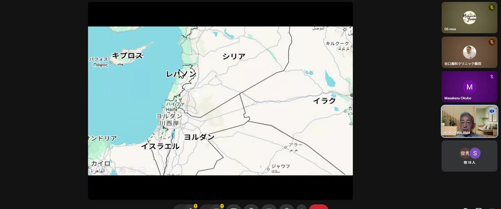
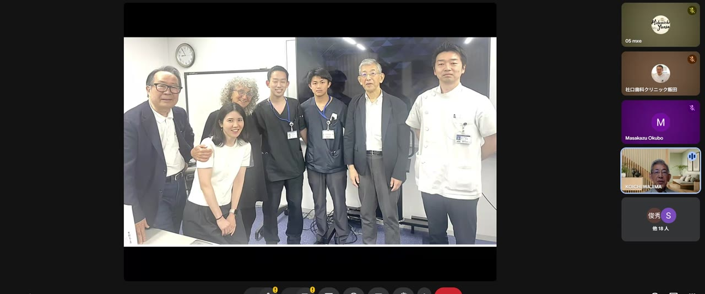
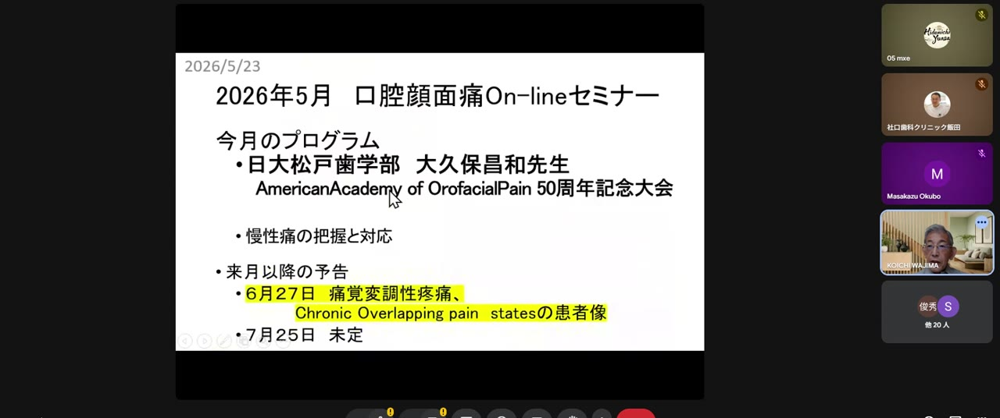

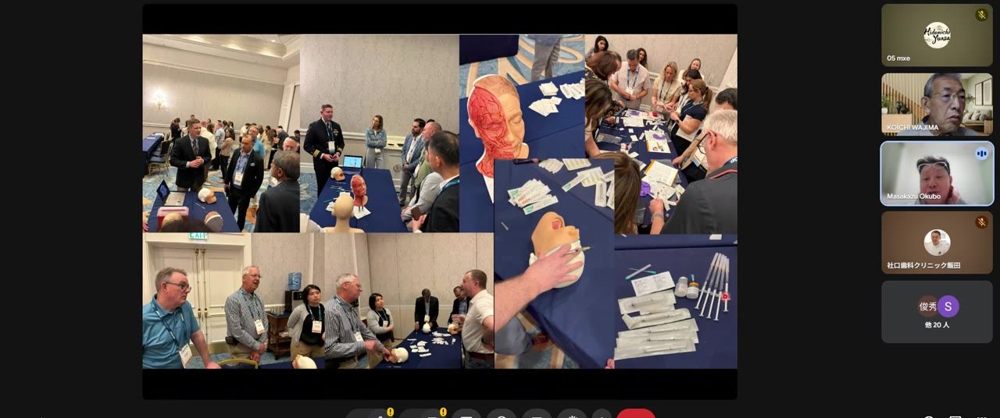

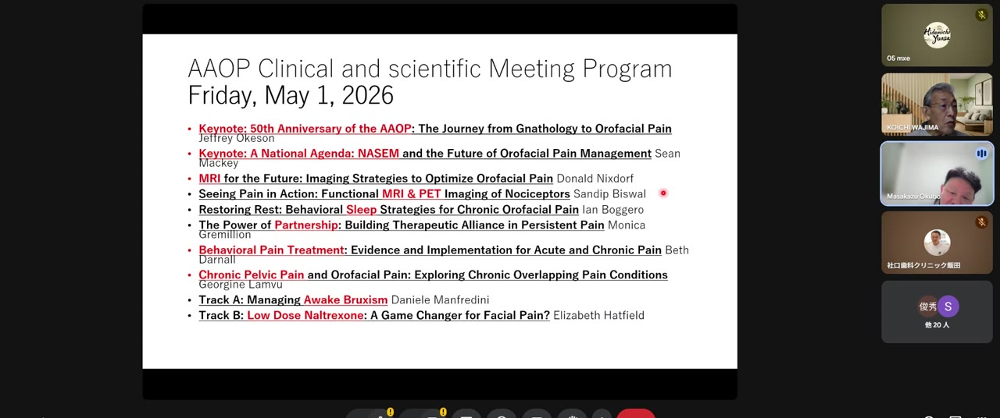
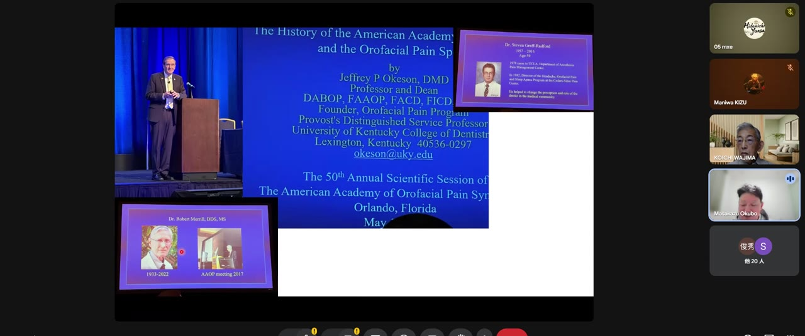

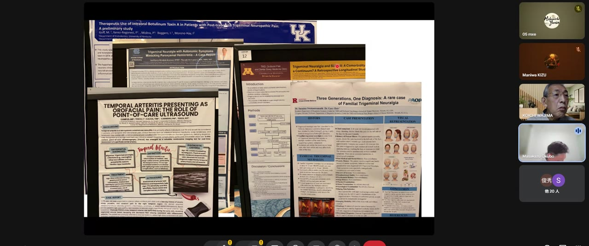
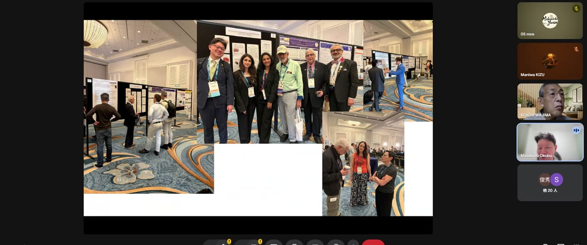

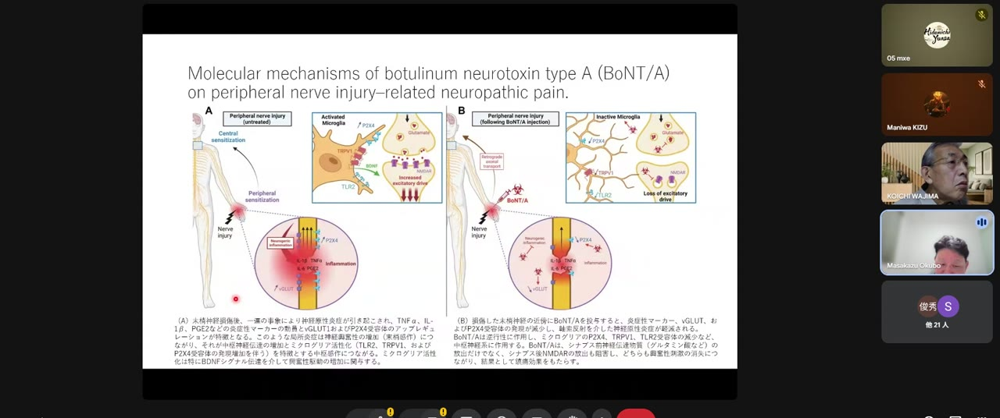
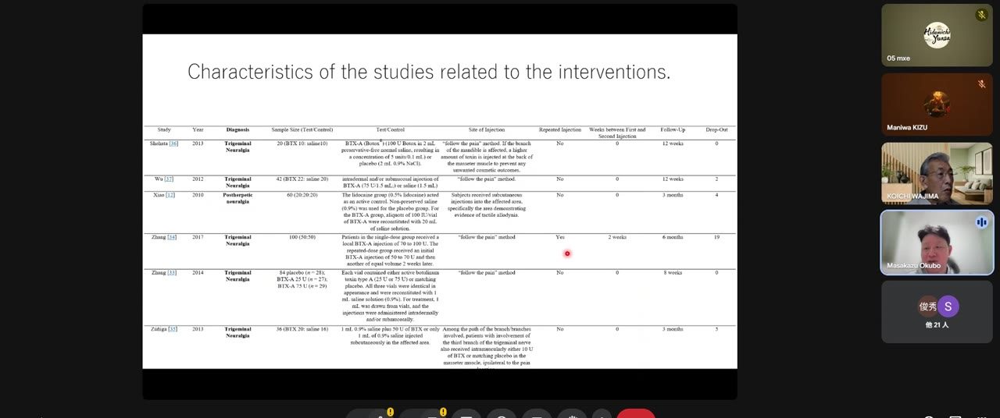
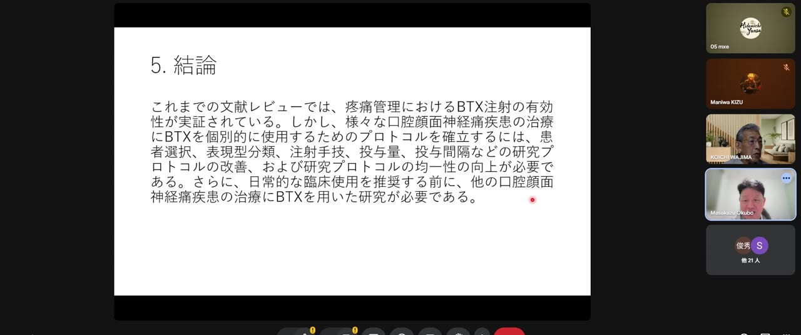
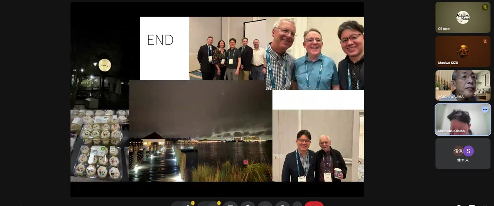
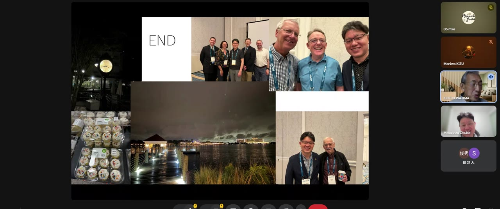
出典URL
- AAOP Annual Clinical and Scientific Meeting 2026: https://member.aaop.org/event-6110713
- Val M, Delcanho R, Ferrari M, Guarda Nardini L, Manfredini D. Is Botulinum Toxin Effective in Treating Orofacial Neuropathic Pain Disorders? A Systematic Review. Toxins. 2023. PubMed: https://pubmed.ncbi.nlm.nih.gov/37755967/
- Sharav Y, Benoliel R, Haviv Y. Botulinum Toxin-A, Generating a Hypothesis for Orofacial Pain Therapy. Toxins. 2025. https://www.mdpi.com/2072-6651/17/8/389
- Kim YM, Son JY, Ahn DK. Botulinum toxin type A is a potential therapeutic drug for chronic orofacial pain. J Oral Biosci. 2024. PubMed: https://pubmed.ncbi.nlm.nih.gov/38908515/
- IASP Pain Research Forum paper note for Kim et al. 2024: https://www.iasp-pain.org/publications/pain-research-forum/papers-of-the-week/paper/botulinum-toxin-type-a-is-a-potential-therapeutic-drug-for-chronic-orofacial-pain/